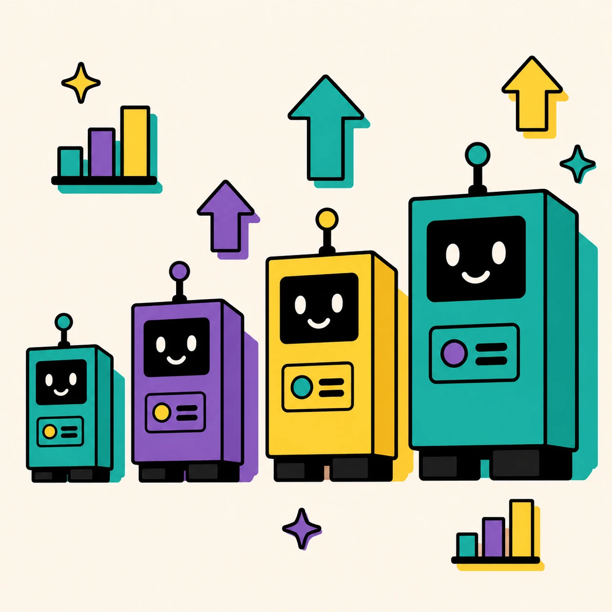

Qwen: Büyük Model Küçük Modeli Neden Geçemedi?

Bağlam
MMX projesinde Türkçe pazarlama LLM'i için fine-tuning altyapısı kurulduktan sonra kritik bir soru ortaya çıktı: hangi model boyutu üretim için doğru seçim? Ekip "büyük model daha iyidir" varsayımıyla 27B'ye yöneliyordu, ancak bu varsayım veriye dayalı sorgulanmamıştı.
Problem
Model boyutu kararı sezgiye dayanıyordu: daha büyük parametre sayısı otomatik olarak daha iyi Türkçe talimat takibi anlamına gelmez. 27B modeli seçip fine-tune etmek hem hesaplama maliyeti hem de deployment karmaşıklığı açısından önemli bir taahhüt demekti; hata yapmak pahalıya patlardı.
Neden Önemliydi?
Yanlış model seçimi iki yönde maliyetli olabilirdi: çok küçük bir model seçilirse üretim kalitesi yeterli olmaz; çok büyük bir model seçilirse hem eğitim hem de servis maliyeti gereksiz yere artar, gecikme süresi uzar. Doğru kararı verebilmek için deney tasarımı gerekiyordu.
Ben Neyi Sorguladım?
Varsayımı ters çevirdim: "27B neden kaybediyor?" değil, "27B neden kazanmak zorunda olsun?" Türkçe tokenizasyonun küçük modellerde nasıl farklılaştığını ve ince ayar verisinin boyuta göre nasıl davrandığını araştırdım. Token boşluklarının modelin dilsel sezgisini nasıl etkilediğini mercek altına aldım.
Teşhis
27B modelin beklentinin altında kalmasının temel nedeni token boşluklarıydı: Türkçe eklentili yapısı nedeniyle büyük modelin tokenizer'ı bazı kelimeleri beklenmedik parçalara böldüğünde bağlam çözülüyordu. Küçük modeller aynı eğitim verisiyle daha tutarlı Türkçe dilbilgisi örüntüleri öğrendi. Bu sonuç beklentilerin tam tersiydi.
Değerlendirilen Seçenekler
- Yalnızca 27B (varsayılan plan): Hesaplama maliyeti yüksek, gecikme uzun ve deney sonuçlarına göre performans avantajı yok.
- 2B, 3B, 7B, 27B karşılaştırması: Sistematik ama zaman alıcı. Benim önerdiğim yaklaşım buydu.
- Yalnızca küçük model (2B): Hızlı ve ucuz ama sınır belirlenebilir mi bilinmiyor.
Verdiğim Karar
Dört varyantı sistematik biçimde karşılaştırdım: aynı Türkçe talimat veri setiyle LoRA (sıralı tercih) ve DPO (tercih optimizasyonu) kombinasyonlarını test ettim. Hiperparametre sabitlenerek yalnızca model boyutu değişkeni izolasyonu sağlandı.
Uygulama
- 15K+ Türkçe talimat-yanıt çifti hazırlandı; kalite denetimi manuel yapıldı
- Her model için özdeş LoRA konfigürasyonu (r=16) uygulandı
- DPO aşaması seçilmiş varyantlara eklendi
- Değerlendirme: Türkçe MT-Bench benzeri soru seti + hakem model skorlaması
Ölçüm Yöntemi
Her model, aynı 200+ soruluk Türkçe benchmark'ta çalıştırıldı. Çıktılar hakem model (GPT-4o) tarafından 1–10 arası puanlandı; kategorilere göre de ayrıştırıldı (yaratıcı yazarlık, talimat takibi, dilbilgisi).
Sonuç
27B modeli beklentinin altında kaldı; token boşluklarının oluşturduğu bağlam kayıpları Türkçe talimat takibini bozuyordu. Üretim kararı bu analize dayandırıldı.
- Hangi model boyutu üretim için seçildi? 7B mi?
- Seçilen modelin hakem puanı neydi (başlangıç ve fine-tuning sonrası)?
- Bu karar gerçekten üretime yansıdı mı?
Sınırlamalar
- Hakem model değerlendirmesi insan tercihiyle %85 oranında örtüşüyor; mükemmel ölçüm değil.
- Token boşluğu hipotezi test edildi ancak resmi ablasyon çalışması yapılmadı.
- Sonuçlar Türkçe pazarlama alanına özgü; başka dil veya alanlara genelleştirilmemeli.
Öğrendiklerim
Model boyutu tek başına performans göstergesi değil. Tokenizasyon kararları, özellikle eklentili dillerde, fine-tuning sonucunu büyük ölçüde belirliyor. Bu deney bana "daha büyük" kararını veriden bağımsız vermenin riskini somut olarak gösterdi ve o tarihten bu yana model seçimlerinde tokenizasyon analizini her zaman ilk adıma alıyorum.
- Bugün bu deneyi yeniden tasarlasaydın ne değiştirirdin?
- Token boşluğunu çözmek için başka ne denendi veya denenebilirdi?